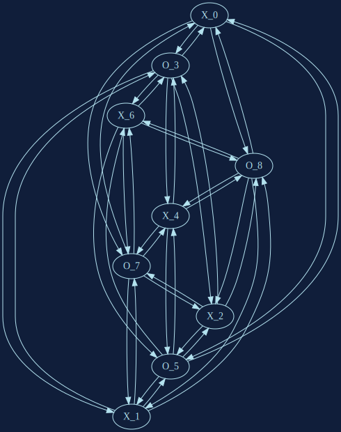
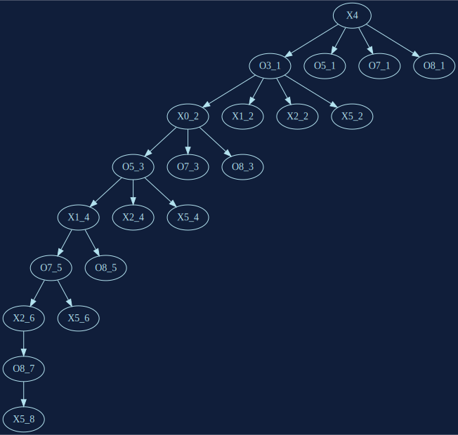

MACHINE LEARNING IS THE SCIENCE OF GETTING COMPUTERS TO ACT WITHOUT BEING EXPLICITLY PROGRAMMED.
MY JOURNEY IN THE ML WORLD...
MAY 2016:
A SUNDAY MORNING AT THE BAKERY
LINEAR REGRESSION
CUMULATIVE NUMBER OF "COOK" IN AVERAGE PER HOUR
LINEAR REGRESSION
f(x) = 28.12*x-203.48
https://bit.ly/2JPBXTu
IF I MAKE 130 COOK AND I CLOSE AT 12:00, WILL I HAVE ENOUGH?
130 - f(12)
130-(28.12*130 - 203.48)
-3.06
THIS IS WHAT IS CALLED A PERCEPTRON
ADDING MORE FEATURES, AND PLAYING TETRIS TURNS THAT INTO A NEURAL NETWORK
WHAT ABOUT MY (PAID) JOB?
TO SEEK FOR THE BETTER WAY:
TOPOLOGY OF APPLICATIONS
CONFIGURATION MANAGEMENT
ORCHESTRATION
GRAPHS!!!
SHALL WE PLAY A GAME?
X
X
X
O
X
O
X
O
O


A WORD ABOUT UNSUPERVISED LEARNING
A STRANGE GAME,
THE ONLY WINNING MOVE IS
NOT TO PLAY.
CONCLUSIONS
SRE IS "WHAT HAPPENS WHEN YOU ASK A SOFTWARE ENGINEER TO DESIGN AN OPERATIONS FUNCTION" - BEN TREYNOR
WILL DATA-SCIENTISTS TAKE OVER THIS ROLE?
THE FUTURE OPS MAY A CONDUCTOR OF SMART ALGORITHMS
WE ARE AT THE BEGINNING OF THE BEGINNING. (...) NO ONE IS LATE! - K. KELLY - THE INEVITABLE
MACHINE LEARNING NEEDS A LOT OF ENGINEERING
YOU DON'T NEED TO LEARN WHATEVER FANCY FRAMEWORK TO START!